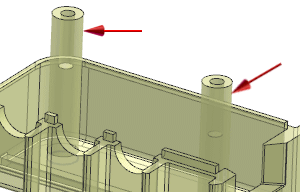
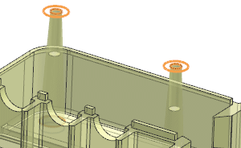
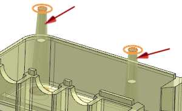
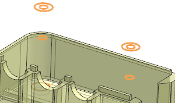

Remove the mounting studs
-
On the Synchronous Modeling toolbar, click Delete Face
 .
.
-
On the Selection bar, set Face Rule to Rib Faces.
-
Select the two cylindrical faces of the mounting studs.

The selected faces are removed.

-
Select the two cylindrical faces of the general holes.

The selected faces are removed.

-
In the Delete Face dialog box, click OK.